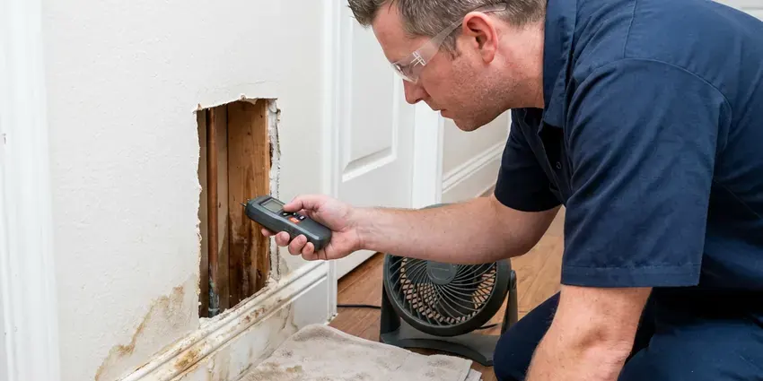

Plumbing Inspection in Carson, NV
Our inspection reports in Carson, NV sort findings from urgent to can-wait, with repair ranges.
- Same-Day Inspection Appointments
- Flat Pricing
- Written Photo Reports
- Licensed Nevada Plumbers

Book a Plumbing Inspection This Week in Carson, NV
Call today and get a written report with photos and sewer camera video.
Thorough Plumbing Inspections for Carson, NV Homes
FMR Plumbing goes deeper than a general home inspection, which often stops at running faucets and flushing toilets. Our licensed plumbers identify polybutylene, Kitec and galvanized pipe, measure pressure and look for early signs of slab leaks on every visit. It is a plumber's look, not a generalist's.
Some of what we do:
- Sewer camera inspections with recorded video and line location
- Water heater, gas connection and fixture condition checks
- Gas connector and shutoff checks

Additional Plumbing Maintenance Services in Carson, NV
Our maintenance and specialty plumbing services in Carson, NV catch small problems before they become emergencies.


Customers
Why Choose FMR Plumbing for Plumbing Inspection in Carson, NV?
A plumber's inspection gives you facts instead of guesses. We tell you what pipe you have, how old the water heater is and what the sewer looks like on video. There is no pressure to hire us. If you want quotes on the repairs, we can give them, but the report stands on its own and you can take it to any plumber you like.
- Save Money, Planned repairs cost less than emergency calls.
- Foundation Protection, Meter tests and thermal imaging catch under-slab leaks before they damage floors and foundations.
- Prevent Damage, Hidden leaks get found before they reach floors, walls or belongings.
Citywide Coverage
We inspect plumbing in every neighborhood of Carson, from newly built homes to properties that are 50 years old or more. Older areas get extra sewer attention. Original pipe and old sewers produce most of our findings, which is why those houses get more camera time and a closer look at fittings.
Experienced Team
Our plumbers have years of experience with Nevada homes and the problems they develop. Repairs taught them what to look for. Having repaired hundreds of slab leaks, sewer breaks and failed water heaters, they know the early signs and can spot a problem before it shows up as a stain or a backup.
Safety-First Approach
Our inspections are set up to find hazards and code violations before they cause trouble. Older homes need this most. Lots of findings were legal when the house was built but miss current code, and we explain which affect safety and which do not.
Trusted Certified Carson Plumbing Services Professionals
At FMR Plumbing, we are proud to offer certified plumbing services throughout Carson, NV. Credentials matter in this trade. Our plumbers hold recognized industry credentials, and they follow strict safety and quality rules on every repair, installation and maintenance call we run.
Call Us Now PHCC Plumbing Contractor Recognition
PHCC Plumbing Contractor Recognition Better Business Bureau (BBB) Accreditation
Better Business Bureau (BBB) Accreditation Angi Certified Pro
Angi Certified Pro ISO 9001 Quality Management Certification
ISO 9001 Quality Management CertificationWhat a Plumbing Inspection Covers in Carson, NV
Sewer Line Camera Inspections in Carson, NV
A sewer camera shows the inside of the main drain without digging. The camera goes in at a cleanout and travels to the main or the tank, recording roots, cracks, offsets and bellies along the way. We mark problem spots from above. Most homes sit on concrete slabs, so leaks in buried supply lines often show up as warm spots on the floor or higher water bills.

Leak Detection and Assessment in Carson, NV
Hidden leaks waste water and quietly damage floors and walls. Start at the meter. With all fixtures off, we watch the meter's leak indicator, then use acoustic listening gear and a thermal camera to trace the leak behind walls, under floors or in the slab. Catching it early keeps it small. Most homes sit on concrete slabs, so leaks in buried supply lines often show up as damp areas on the floor or higher water bills.
Pre-Purchase Plumbing Report in Carson
Before buying a home in Carson, a plumber's inspection can keep you from inheriting a sewer replacement. Our report lists every finding with a photo, a plain description and a repair range, so your agent can use it in negotiations right away. Most buyers get it the same day. That timing fits most option periods.
Hard Water Damage Assessment in Carson
Homes around Carson that rely on private wells should test for hardness and other minerals before choosing treatment equipment. Hard water leaves scale in pipes, fixtures and water heaters. We look for crusty aerators, scaled showerheads, slow-filling toilets and sediment in the water heater, and we can run a simple hardness test on the spot. You get options, not a pitch. A softener, a filter or a scale-reducing system can extend heater and fixture life, and we tell you which one fits the hardness we measured.
Pre-Purchase Inspection With Sewer Video in Carson
Plumbing problems are some of the most expensive surprises after closing. Our pre-purchase inspection covers the supply pipe type, the sewer condition on video, the water heater's age and every fixture. Your agent gets the report. Many buyers use our findings to ask for repairs or credits, and the sewer video alone has saved buyers from five-figure surprises.
Commercial Property Plumbing Checks in Carson
Businesses in Carson use our inspections to plan maintenance instead of reacting to breakdowns. We look at backflow assemblies, water heaters, restroom flush valves, floor drains and trap primers and the building sewer. Closures are expensive. A written report with ranked priorities lets you schedule the repairs after hours or on a weekend instead of closing during business hours.
Gas Connection Safety Check in Carson, NV
During a full inspection, we look at the visible gas piping and the connectors to each appliance. Old brass connectors, missing shutoffs or drip legs and rust all get noted, and we sweep joints with a gas detector. Any leak is reported on the spot. Older homes are where we find the most issues, usually at appliance connectors that have been there since the house was built.

Commercial Plumbing Inspections in Carson, NV
Commercial buildings have equipment homes do not, so our commercial inspections cover more ground. We look at backflow assemblies, grease interceptors, commercial water heaters, flush valves and the building sewer. Inspectors like documentation. The written report helps facility managers plan and budget repairs before a health inspector or the water provider writes them up.
A Local Plumbing Inspection in Carson, NV
Our plumbers live and work around Carson, NV, and inspections are a regular part of their week. You will not wait long. Most clients get the written report with photos and sewer video the same day or the next business day, which fits most real estate timelines comfortably.
When you need a plumbing inspection near me on a tight real estate timeline, FMR Plumbing can often schedule within a day or two in Carson. Every truck has a camera, locator and gauges, which lets us finish in one trip and get the report out fast.
FMR Plumbing at a Glance
- Fully licensed plumbing team covering Carson, NV
- Same-day appointments and 24/7 emergency response
- Upfront, flat-rate pricing before work begins
- 4.8-star rated by 903+ Nevada customers
Carson Map
Carson Information
- Population
- 58,036
- Area codes
- Local
- Service area
- Carson and communities within 40 miles
- Nearby
- Reno, Sparks, Sun Valley, Fernley
A plumbing inspection in Carson, NV finds hidden leaks and sewer problems while they are still cheap to fix. Most homes sit on concrete slabs, so leaks in buried supply lines often show up as warm spots on the floor or higher water bills.
Talk to a Plumber
Call FMR Plumbing for honest, reliable plumbing from people who know the trade in Carson, NV.
Our Specialized Plumbing Services in Carson, NV
At FMR Plumbing, you get every kind of plumbing service from one company across Carson, NV. From leak detection to full system installs, our team works fast and charges fair prices on homes and commercial properties alike. Here are the core services we offer:


The Plumbing Inspection Process in Carson, NV
Here is how a plumbing inspection in Carson, NV works, from start to finish.
Book the Inspection
Call (725) 360-1766 or use the form to schedule. We ask about the property and your timeline and give you a price.
Inspect the System
A licensed plumber tests fixtures, pressure, the heater and the sewer line using cameras and gauges.
Get the Report
You get a written report with photos, priorities and repair ranges for anything that needs work.
Frequently Asked Questions About Plumbing Inspection in Carson
Standard plumbing inspections typically run $150 to $300. With the sewer camera, most totals land between $250 and $500.
Watching your water meter, looking under sinks and checking for leaks are all things you can do yourself. A professional inspection adds camera video, pressure testing and expert analysis.
In most cases, yes. The water meter is the first test. A moving leak dial with fixtures off tells us to bring out the acoustic gear and thermal camera, which find the leak without random cutting.
We can include estimated repair ranges in the report and firm quotes if you want us to do the work. There is no obligation to hire us for repairs.
You can do a basic check by looking under sinks and watching your water meter. The tools make the difference. Professionals bring sewer video, pressure readings, leak tracing and code knowledge, which find what a visual look misses.
A one to two year routine works for most homes. Older homes and properties with past leaks may benefit from yearly inspections.
High water bills, repeat clogs, slow drains and discolored water are common signs. Noisy pipes are another. Strange sounds from the pipes or the water heater, along with visible moisture or mold near fixtures, usually point to an underlying problem that needs a professional look before it gets worse.
Our plumber explains each issue, how serious it is and what the repair options are. You decide what happens next. We can quote any repairs on the spot or later, and you can have us do the work, use another plumber or hand the report to the seller during negotiations.
Hear From Customers Who Hired Our Plumbing Experts

Rachel N.
Hard water was leaving white crust on every faucet and our dishwasher was struggling. The tech tested the water, recommended a softener sized for a family of five, and installed it with a bypass valve in one afternoon. The spots on our glasses are gone.
Water Softener · Elko, NV
Tyler J.
We bought a taller comfort height toilet for my dad, who just had knee surgery. The plumber pulled the old one, found the flange was cracked, and replaced it before setting the new bowl. Took about two hours.
Toilet Installation · Reno, NVNathan E.
Our tankless heater kept throwing an error code and shutting off mid shower. The tech flushed the heat exchanger, which was full of scale, and replaced a bad flow sensor. Hot water has been steady for half a year now.
Water Heater Repair · Carson, NV
Greg S.
I manage a small strip center with six tenants. FMR Plumbing handles our annual backflow testing and fixed a recurring clog in the shared sewer line that had been backing into the nail salon. Their reports come in clean and on time.
Commercial Plumbing · Sparks, NV
Patricia H.
We had a slab leak that two other companies could not find. FMR Plumbing located it in under an hour with a listening device. They rerouted the line through the attic instead of breaking up the floor, so we kept our kitchen tile.
Slab Leak Repair · Sun Valley, NVEmily R.
The shutoff valve under our kitchen sink snapped off in my hand on a Sunday morning. FMR Plumbing had someone out by early afternoon. He replaced both angle stops with quarter turn valves and showed me where our main shutoff was, which I honestly did not know.
Plumbing Repair · Sparks, NV